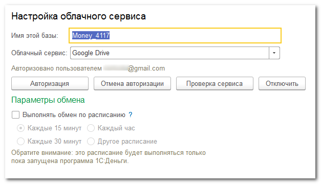

Имя этой базы – строка, которая используется для создания в облаке вспомогательного файла со списком устройств.
Облачный сервис – сервис который будет использоваться для обмена файлами.
Изменение облачного сервиса так же потребует повторной настройки синхронизации на всех мобильных устройствах.
Кнопка Авторизация – открывает страницу авторизации приложения на выбранном сервисе.
Для авторизации нужно войти в сервис под своим логином и разрешить приложению доступ к ресурсам пользователя на этом сервисе.
После успешной авторизации под выбранным облачным сервисом будет отображаться логин пользователя. Никаких других пользовательских данных, а тем более паролей, приложение не хранит.
Если потребуется сменить пользователя облачного сервиса, снова нажмите кнопку Авторизовать и на странице ввода логина/пароля укажите другой логин.
Кнопка Отмена авторизации позволяет отменить авторизацию приложения на сервисе - т.е. запретить приложению доступ к ресурсам пользователя на обаке. Аналогичную отмену можно выполнить в личном кабинете или в настройках аккаунта в облачном сервисе.
Кнопка Проверка сервиса выполняет следующие действия:
Все выявленные проблемы сообщаются пользователю.
Используйте эту кнопку, чтобы проверить доступность сервиса и его готовность к обмену. Так же кнопка будет полезна, если на облачном сервисе удалили вспомогательный файл списка устройств.
С помощью кнопки Отключить можно установить временный или постоянный запрет на использование облачного сервиса.
Запуск обмена можно автоматизировать с помощью расписания. Но следует понимать, что это расписание работает только пока запущена сама программа. Как только программа закрыта, работа расписания прекращается.
Если стандартные варианты расписания не устраивают, можно выбрать вариант Другое расписание и произвести тонкую настройку повторов задания обмена.
Для отключения расписания достаточно убрать флаг Выполнять обмен по расписанию.
Обратите внимание: не стоит устанавливать слишком частую периодичность обмена – это приведет к излишней и бесполезной загрузке сети и процессора. Обычно, для выполнения ежедневного обмена постоянно включенного компьютера достаточно установить периодичность в 30 минут или даже в 1 час.